전파전자통신기사 (2005-05-29 기출문제)
1과목: 디지털전자회로
1. RC결합 증폭회로에서 증폭 대역폭을 4배로 하려면 증폭이 득을 약 몇 [㏈] 감소시켜야 하는가?
- 0.5[㏈]
- 4[㏈]
- 6[㏈]
- 12[㏈]
(정답률: 알수없음)

2. RC결합 증폭기에 구형파 전압을 입력시켜 그림과 같은 출력이 나왔다면, 이 증폭기의 주파수 특성을 가장 적합하게 설명한 것은?
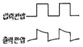
- 저역 특성이 특히 좋지 않다.
- 중역 특성이 특히 좋지 않다.
- 고역 특성이 특히 좋지 않다.
- 중역과 고역특성이 모두 나쁘다.
(정답률: 알수없음)
3. 그림과 같은 회로에서 입력에 Vi = 50 sin ωt[V]인 정현파를 가했을 때 출력 Vo의 파형으로 옳은 것은? (단, D1, D2의 항복전압은 10[V]이다.)
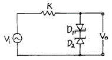
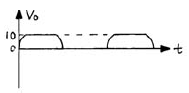
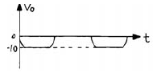
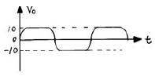
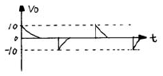
(정답률: 알수없음)
4. 아날로그-디지털 변환에 가장 유효하게 사용되는 코드는?
- BCD 코드
- 3초과 코드
- 그레이 코드
- 링 카운터 코드
(정답률: 알수없음)
5. 다음 차동증폭기의 차신호의 전압이득 Av = 100 이다. 출력전압 Vo는? (단, 동상신호는 무시한다.)
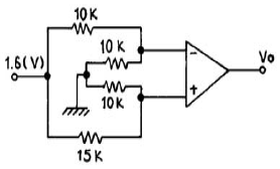
- 15[V]
- 16[V]
- 17[V]
- 18[V]
(정답률: 알수없음)
6. 그림과 같은 단안정 멀티바이브레이터의 출력(Vo)파의 펄스폭 T[sec]는?
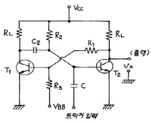
- T = C2R2 ln 10
- T = R1R2 ln 2
- T = C2R2 ln 2
- T = C2R1 ln 2
(정답률: 알수없음)
7. 다음 이상적인 연산증폭 회로의 출력전압 eo는?
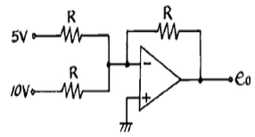
- 5[V]
- 10[V]
- -15[V]
- -20[V]
(정답률: 알수없음)
8. 펄스변조방식 중 디지털 펄스변조에 해당되지 않는 것은?
- PNM
- ⊿M
- PCM
- PTM
(정답률: 알수없음)
9. 양의 VGS로 된 n채널 공핍형 MOSFET의 동작은?
- 공핍형 모드에서 동작한다.
- 증가형 모드에서 동작한다.
- 차단에서 동작한다.
- 포화에서 동작한다.
(정답률: 알수없음)
10. 반송파와 변조파주파수가 각각 일정한 경우, 다음의 각 변조지수로 FM변조를 할 때 가장 양호한 신호대 잡음비를 기대할 수 있는 경우는?
- 0.4
- 0.5
- 1.0
- 5.0
(정답률: 알수없음)
11. 디지털 분야의 논리소자로서 바이폴라소자가 아닌 것은?
- TTL
- C-MOS
- DTL
- HTL
(정답률: 알수없음)
12. 그림의 복수 에미터 트랜지스터가 이루는 논리게이트는?
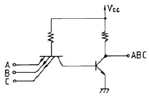
- TTL
- DTL
- DCTL
- RTL
(정답률: 알수없음)
13. 다음 회로에 대한 설명으로 옳지 않은 것은?
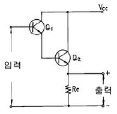
- Q1과 Q2는 Darlington 접속이다.
- 이 회로는 emitter follower 이다.
- Q1과 Q2의 조합은 등가적으로 NPN 트랜지스터이다.
- Vcc의 전원은 부(-)이어야 한다.
(정답률: 알수없음)
14. 입력전압이 Vi, 출력전류가 io 일 때, 다음 식은 출력전류와 입력전압의 비선형 관계를 표시한 식이다. 진폭 변조와 관계되는 항은? (단, Ao, A1, A2, A3,···는 상수이다.)
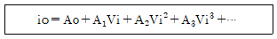
- Ao 항
- A1Vi 항
- A2Vi2 항
- A3Vi3 항
(정답률: 알수없음)
15. 점유율이 50[%]인 10 [MHz]의 클럭신호로부터 펄스폭이 1[초]인 게이트 펄스를 얻어내기 위해 분주회로를 구성할 때 필요로 하는 분주회로의 종류와 개수를 올바르게 선택한 항은?
- 10분주회로 6개, 2분주회로 2개
- 10분주회로 7개, 2분주회로 1개
- 10분주회로 7개
- 10분주회로 5개, 2분주회로 3개
(정답률: 알수없음)
16. 전원장치의 필터를 설계할 때 리플계수(ripple factor)에 관한 내용 중 틀린 것은?
- 리플계수는 필터의 효율을 나타내는 계수이다.
- 리플계수는 작을수록 좋다.
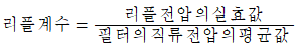
- 리플계수는 부하저항을 감소시키면 적어진다.
(정답률: 알수없음)
17. 다음 회로에서 다이오드 D1과 D2가 동시에 차단상태로 되는 조건으로 옳은 것은? (단, V2 > V1이다.)
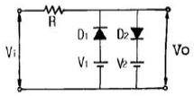
- Vi ≤ V1
- V1 > Vi > V2
- V1 < Vi < V2
- Vi ≥ V2
(정답률: 알수없음)
18. MS F-F 의 진리표에서 Jn=1, Kn=0 이고 클럭펄스를 인가 할 때 출력 Qn+1 의 값은?
- Qn
- 0
- 1
- 불확정
(정답률: 알수없음)
19. 다음의 내용 중에서 귀환형 발진기의 특징과 관계가 없는 항은?
- 귀환형 발진기에서는 입력신호가 필요하지 않다.
- 귀환형 발진기에서는 출력의 일부가 입력으로 정귀환 된다.
- 귀환형 발진기에서 종합 루프이득은 1이다.
- 귀환형 발진기에는 귀환회로에 반드시 인턱터(L)를 사용해야 한다.
(정답률: 알수없음)
20. 그림과 같은 교류적 등가회로로 표시되는 발진회로의 발진주파 수는?
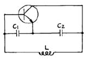
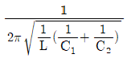
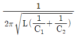
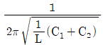
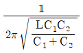
(정답률: 알수없음)
2과목: 무선통신기기
21. FM신호의 변조 주파수(fp)가 15㎑이고, 변조지수(mf)가 5일 때 FM 수신기의 필요 주파수 대역폭은?
- 15㎑
- 30㎑
- 75㎑
- 180㎑
(정답률: 알수없음)
22. 150[㎒]정도의 전파의 파장을 측정하고자 한다. 레헤르선의 길이는 최소한 몇[m]이어야 하는가?
- 3
- 2.5
- 2
- 1
(정답률: 알수없음)
23. 주파수 체배 증폭기의 증폭방식으로 가장 적당한 것은?
- A 급
- B 급
- AB 급
- C 급
(정답률: 알수없음)
24. 수신 주파수와 국부발진 주파수를 동시에 변동시켜 일정한 중간주파수를 얻도록 조정하는 방식이 Tracking인데, 만일 Tracking이 정확하지 않으면 어떤 현상이 초래되는가?
- 이득 증가
- 충실도 저하
- 신호대 잡음비 개선
- 간섭과 방해 신호의 감소
(정답률: 알수없음)
25. 그림과 같이 Bolometer와 Bridge 회로를 이용하여 마이크로파 전력을 측정할 경우 Bolometer에서 마이크로파의 전력소비가 없을 때의 A의 지시치가 3[A]이고, 전력소비가 있을 때의 A의 지시치가 2[A]라면 마이크로파 전력의 세기는?
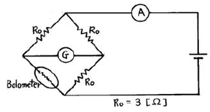
- 1[W]
- 1.25[W]
- 3.75[W]
- 5[W]
(정답률: 알수없음)
26. 축전지에서 AH(암페어시)가 나타내는 것은?
- 축전지의 사용가능시간
- 축전지의 용량
- 축전지의 충전전류
- 축전지의 방전전류
(정답률: 알수없음)
27. 오실로스코프로 송신기 출력파형을 관찰하였더니 그림과 같은 파형을 얻었다. 이 송신기의 변조도는?
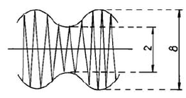
- 80%
- 60%
- 30%
- 20%
(정답률: 알수없음)
28. 무선 송신기에서 기생진동(Parasitic Oscillation)과 관계가 적은 것은?
- 증폭회로
- 전원주파수
- 회로의 배선
- 부품의 접지
(정답률: 알수없음)
29. 수정발진기의 발진주파수 변동을 방지하기 위한 대책으로 틀리는 것은?
- 온도계수가 큰 수정 공진자를 사용한다.
- Q가 높은 수정 공진자를 사용한다.
- 부하와의 사이에 완충증폭기를 사용한다.
- 정전압회로를 사용한다.
(정답률: 알수없음)
30. 구형파를 반파정류 하였을때 출력 전압의 평균치는?
- 최대치의 2배
- 최대치
- 최대치의 0.707배
- 최대치의 0.5배
(정답률: 알수없음)
31. 위성방송 TV수신용 안테나와 가장 거리가 먼 것은?
- 파라볼라안테나
- 야기(yagi)안테나
- 패치 어레이(patch array)안테나
- 오프 세트(off set)안테나
(정답률: 알수없음)
32. 다음은 Ring 변조기의 동작원리를 설명한 것이다. 잘못 표현된 것은?
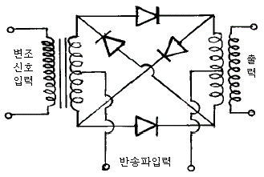
- 변조기 출력에는 반송파가 제거되고 상,하측대파만 나온다.
- 반송파가 인가되지 않으면 변조 신호만 나타난다.
- Ring변조기를 복조기로도 사용할 수 있다.
- 반송파만 인가되면 출력에는 아무것도 나타나지 않는다.
(정답률: 알수없음)
33. 송신기의 공진회로의 효율은? (단,무부하시 Q0 = 200,부하시 QL = 40)
- 90(%)
- 10(%)
- 80(%)
- 15(%)
(정답률: 알수없음)
34. 실효높이 15[m]인 안테나에 0.045[V]의 전압이 유기되면 이곳의 전계강도는 몇[㏈]인가? (단,기준전계 강도는 1㎶/m)
- 약 70㏈
- 약 99㏈
- 약 180㏈
- 약 160㏈
(정답률: 알수없음)
35. 다음 회로는 트랜지스터를 이용한 리미터(Limitter)회로이다. 회로에 관한 다음 설명 중 틀린 것은?
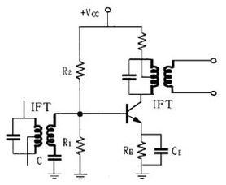
- 컬렉터의 바이어스 전압을 가능한 낮게 설정해야 출력 포화로 인한 진폭 제한의 기능을 잘 수행한다.
- R1을 크게하면 우수한 진폭제한기의 기능을 수행한다.
- 콘덴서 C는 IF 이외의 높은 주파수의 잡음 신호를 제거하는 기능을 한다.
- RE 값을 적게하면 출력신호의 포화가 빨리 일어나 진폭제한기의 기능을 한다.
(정답률: 알수없음)
36. FM 송신기에서 프리엠퍼시스(pre-emphasis) 회로를 사용하는 목적은?
- 신호의 크기를 증가시킨다.
- 전송 효율을 높인다.
- 신호대 잡음비(S/N)를 향상시킨다.
- 주파수 대역폭을 좁힌다.
(정답률: 알수없음)
37. 위성시스템 설계시 전파가 빗방울에 부딪치면 산란되면서 전력이 감쇠되는데 이러한 영향은 10GHz에서 현저하다. 이러한 현상을 막기위해 사용하는 회로로 가장 적합한 것은?
- 스크램블러회로
- 디스크램블러회로
- 전파보상회로
- AGC 회로
(정답률: 알수없음)
38. 지구국 안테나의 포인팅(pointing) 손실이란 정확히 무엇을 말하는가?
- 안테나의 기계적인 결함에 의한 손실
- 안테나의 이득저하에 의한 손실
- 안테나빔의 확산에 의한 손실
- 안테나의 위성추적 오차에 의한 손실
(정답률: 알수없음)
39. 인공위성의 이동에 따라서 수신 주파수가 변화하는 현상을 무엇이라고 하는가?
- 패러데이 회전
- 도플러 효과
- 플라즈마 층
- 전파의 지연시간
(정답률: 알수없음)
40. 수퍼헤테로다인 수신기에서 단일 조정은 왜 필요한가?
- 중간주파수를 일정히 하기 위하여
- 발진주파수의 변동을 막기 위하여
- 안정된 고주파 증폭을 위하여
- 중간주파수 대역을 넓게 취하기 위하여
(정답률: 알수없음)
3과목: 안테나공학
41. 도파관 창(Waveguide Window)은 무슨 기능을 하는가?
- 도파관에 이물질이 들어가지 않도록 한다.
- 도파관의 임피던스를 변화시킨다.
- 도파관내의 반사파를 감쇠시킨다.
- 도파관의 비틀림을 용이하게 한다.
(정답률: 알수없음)
42. 일반적인 동축케이블(coaxial cable)내부의 전자계는?
- TEM모드이고 차단파장은 없다.
- TEM모드이고 차단파장은 중심도체 외직경의 2배이다.
- TM모드이고 차단파장은 없다.
- TM모드이고 차단파장은 중심도체 외직경의 2배이다.
(정답률: 알수없음)
43. 다음 안테나 중에서 가장 광대역 특성을 갖는 것은?
- 폴디드 다이폴 안테나(folded dipole antenna)
- 혼 안테나(horn antenna)
- 롬빅 안테나(rhombic antenna)
- 대수주기 안테나(log periodic antenna)
(정답률: 알수없음)
44. 다음 설명 중 옳은 것은?
- 원정관 안테나의 용량환은 등가적으로 안테나의 단축 효과가 있다.
- 역 L형에서 수평부분은 무효 복사부로 본다.
- 기저부에 연장 선륜을 삽입하는 것을 center loading 이라고 한다.
- 역 L형이 실효고가 λ/4 수직접지 안테나보다 2배 정도 높다.
(정답률: 알수없음)
45. 주파수 200[㎒]에 대한 반파장 다이폴 안테나에서 10[㎾]의 전력을 복사할 경우 그 직각 방향 10[㎞] 떨어진 지점에서의 전계의 세기는 얼마인가?
- 7[㎷/m]
- 10[㎷/m]
- 70[㎷/m]
- 100[㎷/m]
(정답률: 알수없음)
46. 마이크로파 안테나로 적합하지 못한 것은?
- 파라볼라 안테나
- 호온 안테나
- 렌즈 안테나
- 웨이브 안테나
(정답률: 알수없음)
47. 다음 중 비동조 급전선의 특징이 아닌 것은?
- 안테나와 송신기 사이의 거리가 먼 경우에 적합한 급전선이다.
- 급전선의 정합장치가 필요하다.
- 급전선상에 정재파가 존재하므로 손실이 크다.
- 전송 효율은 동조급전선 보다 양호하다.
(정답률: 알수없음)
48. 다음 중 통신 위성의 특징이 아닌 것은?
- 안정된 대용량의 통신 가능
- 광범위한 지역에서 고정 및 이동 서비스 제공
- 초기 투자비, 운용비 및 보수비가 통신거리와 무관
- 전자파 방해에 강함
(정답률: 알수없음)
49. 다음 중 루프(Loop) 안테나의 수평면내의 지향특성은?
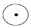
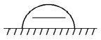
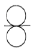
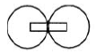
(정답률: 알수없음)
50. 장중파대용 안테나로서 진행파만 존재하는 것은?
- beverage 안테나
- 루우프(loop) 안테나
- 역L형 안테나
- bellini-tosi 안테나
(정답률: 알수없음)
51. 도약거리에 대한 설명으로 옳지 않은 것은?
- 사용주파수/임계주파수가 클수록 크게 된다.
- 사용주파수가 전리층의 임계주파수보다 높을 때에 생긴다.
- 직접파의 도달지점에서 전리층 1회 반사지점 까지의 거리를 말한다.
- 전리층의 이론적인 높이에 비례한다.
(정답률: 알수없음)
52. 도파관의 설명 중 틀린 것은?
- 주파수가 높을수록 저항손실과 유전체손실이 커진다.
- 고역통과필터의 일종으로 볼 수 있다.
- 전송할 수 있는 파장은 모드에 따라 다르다.
- 각 모드마다 대응하는 하나의 차단파장이 존재한다.
(정답률: 알수없음)
53. 전리층 반사파에서 제 1종 감쇠를 가장 많이 주는 전리층은?
- D층
- E층
- F1층
- F2층
(정답률: 알수없음)
54. 복사저항을 Rr, 안테나의 손실저항을 Ro 라 할때 안테나 효율은?

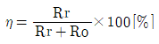


(정답률: 알수없음)
55. 미소 다이폴(dipole) 안테나에서 복사전력은? [단, I : 안테나 전류, l : 다이폴 안테나의 길이, λ : 파장]
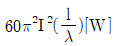
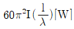
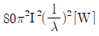
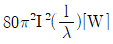
(정답률: 알수없음)
56. 공전(空電)의 잡음을 경감시키는 방법 중 적당하지 않은 것은?
- 지향성 안테나를 사용한다.
- 수신전력을 증가시킨다.
- 높은 주파수를 사용한다.
- 비접지 안테나를 사용한다.
(정답률: 알수없음)
57. 장·중파대에서 주가되는 지상파는?
- 직접파
- 대지반사파
- 지표파
- 회절파
(정답률: 알수없음)
58. 전파투시도(profile map)에 관한 설명으로 적합하지 않은 것은?
- 전파통로 상에서 수평방향의 장애물을 탐색할 때 사용한다.
- 전파통로는 직선으로 계산한다.
- 등가지구 반경계수를 고려해서 그린다.
- 송수신점을 포함한 대지에 수직인 지형 단면도이다.
(정답률: 알수없음)
59. 정지위성을 이용하는 대형 지구국 안테나로 가장 적합한 것은?
- 카세그레인(cassegrain) 안테나
- 이퀴앵귤러(equiangular) 안테나
- 패스렝스(path-length) 안테나
- 파라볼라(parabola) 안테나
(정답률: 알수없음)
60. 주파수 100㎒에 사용되는 반파장 안테나의 실효면적은 얼마인가?
- 0.5[m2]
- 1.17[m2]
- 2.5[m2]
- 3[m2]
(정답률: 알수없음)
4과목: 통신영어 및 교통지리
61. Choose the incorrect one for the duties of the ITU-R.
- to study technical questions relating specifically to radio communication
- to study operating questions relating specifically to radio communication
- to issue recommendations on technical and operating questions relating to radio communication
- to study technical, operating and tariff questions relating to network system
(정답률: 알수없음)
62. What is the main contents in the following sentence?
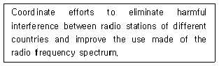
- Composition of the Union
- Purpose of the Union
- Structure of the Union
- Harmful interference
(정답률: 알수없음)
63. Choose the procedure word which belong to the end of work between two stations.
- OUT
- BREAK
- ACKNOWLEDGE
- OVER
(정답률: 알수없음)
64. Choose the one alphabet which would not be appropriate in the following phonetic alphabet.
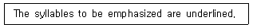
- I ... IN DEE AH
- J ... JEW LEE ETT
- K ... KEY LOH
- L ... LEE MAH
(정답률: 알수없음)
65. Choose the right one for the blank.
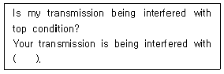
- slightly
- excellent
- extremely
- some
(정답률: 알수없음)
66. Choose the same meaning to the underlined part of the following sentence.
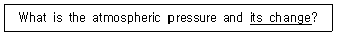
- 기압변화량
- 기온변화량
- 공기변화율
- 침로변경
(정답률: 알수없음)
67. Choose the incorrect one in the following phonetic figure code.
- 5 - PANTAFIVE
- 6 - SEESIX
- 7 - SETTESEVEN
- 8 - OKTOEIGHT
(정답률: 알수없음)
68. What's the meaning of the underlined part?
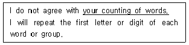
- 귀국의 제안설명
- 귀국의 통보량
- 귀국의 어수계산
- 귀국의 통화량
(정답률: 알수없음)
69. Choose the translation into Korean.
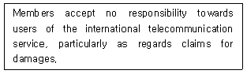
- 회원국은 국제전기통신업무를 이용하는 사람에 대하여 책임을지지 않지만 특별히 손해 배상에 대해서는 책임을 진다.
- 회원국은 국제전기통신의 이용자에 대하여, 특히 손해배상에 관하여는 아무런 책임을 지지 않는다.
- 국제전기통신의 이용자에 대하여 책임을 지는 회원국은 손해배상 청구에 대하여는 인정하지 않는다.
- 국제전기통신의 이용자에 대하여 특히 손해배상 청구에 대하여 책임을 지는 회원국은 없다.
(정답률: 알수없음)
70. Choose the most suitable one to translate the following sentence into English.
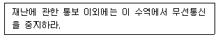
- You must keep radio silence in this area unless you have message about the casualty.
- You have not to silence radiocommunication in this area except a message for the casualty.
- You have to keep radiocommunication silent in this area except in case of a message for the casualty.
- You may keep radio silence in this area unless you have to messages for the casualty.
(정답률: 알수없음)
71. Select the best Korean version for the underlined part.
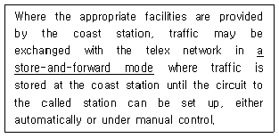
- 기억응답방식
- 대화수신방식
- 축적제어방식
- 축적전송방식
(정답률: 알수없음)
72. Choose the correct one which would be appropriate for the blank.
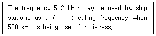
- urgent
- secondary
- supplementary
- visitorial
(정답률: 알수없음)
73. Choose the correct translation of the following korean sentence.
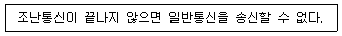
- I can not handle the public correspondence until the distress traffic is ended.
- I can not conduct public correspondence till the distress message is ended.
- I can not accept the public correspondence except distress traffic has ceased.
- I am able to do the public correspondence unless the distress communication is finished.
(정답률: 알수없음)
74. 세계 주요 항구명으로 소재국이 틀린 것은?
- Rotterdam은 Netherlands에 있다.
- Antwerp는 Belgium에 있다.
- Liverpool은 Portugal에 있다.
- Montevideo는 Uruguay에 있다.
(정답률: 알수없음)
75. 다음 중 죽도 무선 표지국명은?
- CD
- CK
- CG
- CY
(정답률: 알수없음)
76. 다음의 항행경보 업무국 중 아프리카 대륙에 위치해 있는 것은?
- MALTA RADIO
- CAPETOWN RADIO
- MARSEILLE RADIO
- GENOVA RADIO
(정답률: 알수없음)
77. AMVER 통신에 대한 설명으로 적합하지 않은 것은?
- 육상상호 통신협력
- 해상수색 협력
- 해상구조 협력
- 미합중국에서 설립
(정답률: 알수없음)
78. 미국의 태평양 연안에 해사위성통신 해안지구국이 소재하고 있는 곳은?
- SANTA ROSA
- SANTA CLARA
- SANTA PAULA
- SOUTHBURY
(정답률: 알수없음)
79. 다음 중 세계 각구역의 NAVAREA 업무담당 단파무선국들이 아닌 것은?
- Bahrain Radio/A9M
- Durban Radio/ZSD
- Bombay Radio/VTG
- Karachi Radio/AQP
(정답률: 알수없음)
80. 다음 중 오대호 입구와 대서양을 연결하는 수로는?
- PALK STRAIT
- SAINT LAWRENCE RIVER
- ST. GEORGE'S CHANNEL
- YUCATAN CHANNEL
(정답률: 알수없음)
5과목: 전파관계법규
81. 다음 중 국제전기통신연합의 최고의결 기관은?
- 이사회
- 전파통신총회
- 전권위원회의
- 세계전기통신표준화회의
(정답률: 알수없음)
82. 음어의 사용목적으로 가장 타당한 것은?
- 통신도청을 방지하기 위해서
- 통신내용을 간략하게 하기 위해서
- 통신내용의 보안을 위해서
- 통신시간을 단축하기 위해서
(정답률: 알수없음)
83. 제1침묵시간의 설명으로 옳은 것은?
- UTC에 의한 매시 15분과 45분부터 각각 3분동안 410kHz부터 510kHz까지의 전파를 발사하여서는 아니된다.
- UTC에 의한 매시 15분과 45분부터 각각 3분동안 495kHz부터 5⑤kHz까지의 전파를 발사하여서는 아니된다.
- UTC에 의한 매시 00분과 30분부터 각각 3분동안 2,089.5kHz부터 2,092.5kHz까지의 전파를 발사하여서는 아니된다.
- UTC에 의한 매시 00분과 30분부터 각각 3분동안 156.7625MHz부터 156.8375MHz까지의 전파를 발사하여서는 아니된다.
(정답률: 알수없음)
84. 해상이동업무에 있어 조난통신을 위한 전파의 형식 및 주파수 중 틀린 것은?
- A2A 500KHz
- A1A 2,182KHz
- H3E 27,821KHz
- G3E 156.8MHz
(정답률: 알수없음)
85. 전문을 같은 통신망에서 사용되는 암어표에 의해 그 암호 내용을 알아내는 것을 무엇이라 하는가?
- 암호분석
- 교신분석
- 암호해독
- 도청
(정답률: 알수없음)
86. 정보통신부장관은 전파자원을 확보하기 위하여 다음과 같이 시책을 수립?시행하여야 한다. 틀리는 것은?
- 새로운 주파수의 이용기술의 개발
- 이용중인 주파수의 이용효율 향상
- 주파수의 국제등록
- 무선국 상호간 혼신제거를 위한 주파수의 공동분배
(정답률: 알수없음)
87. 약호의 정의로 가장 타당한 것은?
- 단어의 주가 되는 문자를 발췌하여 통신내용을 간략하게 단축시키는 것을 말한다.
- 긴 문장이나 단어등을 전혀 뜻이 다른 문자, 숫자등으로 대치하여 통신내용을 간략하게 비익시키는 것을 말한다.
- 평문의 문자나 숫자등에 기술적인 처리를 가하여 통신내용 전체를 체계적으로 변경시키는 것을 말한다.
- 중요내용의 단어나 구절 또는 숫자를 기술적인 처리를 가하여 타어구 또는 숫자등으로 변경시키는 것을 말한다.
(정답률: 알수없음)
88. 전파법의 목적에 해당하지 않는 것은?
- 전파의 효율적인 이용 및 관리를 기한다.
- 전파환경의 개선 및 전파자원의 개발을 촉진한다.
- 전파의 이용 및 전파에 관한 기술의 개발을 촉진한다.
- 전파의 진흥을 도모한다.
(정답률: 알수없음)
89. 다음 중 방해통신에 대한 방어책으로 맞지 않는 것은?
- 상호간에 약정된 확인표를 사용한다.
- 예비용 주파수로 전환한다.
- 통신기기를 세밀히 조정하여 방해전파를 피한다.
- 고출력으로 전파를 발사하여 방해효과를 적게한다.
(정답률: 알수없음)
90. 다음 중 자재보안수단에 해당하지 않는 것은?
- 탐지, 촬영, 관찰 및 복사의 방지
- 비밀자재의 훼손 및 손실방지
- 통신사의 교육 및 통신규율 준수
- 자재전송시의 안전한 보호관리
(정답률: 알수없음)
91. 다음 중 위탁운용 또는 공동사용할 수 없는 무선설비는?
- 방송국의 무선설비
- 무선국의 공중선주
- 송신설비 및 수신설비
- 시설자가 동일한 무선국의 무선설비
(정답률: 알수없음)
92. 다음 ITU기구 중 전파통신 분야에 속하는 것은?
- RRB
- WTDC
- WTSC
- TSS
(정답률: 알수없음)
93. 육상이동국과의 통신을 위하여 육상에 개설하고 이동하지 않는 무선국은?
- 휴대국
- 기지국
- 항공국
- 해안국
(정답률: 알수없음)
94. 다음 중 GMDSS의 주요 기능에 포함되지 않는 것은?
- 현장통신
- 해상 기상통신
- 선교대 선교통신
- 수색 및 구조의 조정통신
(정답률: 알수없음)
95. 다음 중 정기검사 유효기간이 1년인 무선국은?
- 총 톤수 100톤의 의무선박국
- 총 톤수 30톤 어선의 의무선박국
- 평수구역안에서만 운항하는 선박의 의무선박국으로 여객선 및 어선이 아닌 선박
- 회전익 항공기 및 초경량비행장치의 의무항공기국
(정답률: 알수없음)
96. 다음의 GMDSS 무선설비 중 A4해역을 항해하는 선박에 의무 설비가 아닌 것은?
- VHF DSC
- HF DSC
- MF DSC
- INMARSAT-C
(정답률: 알수없음)
97. GMDSS 무선설비 중 VHF대의 DSC 사용주파수는?
- 518 KHz
- 121.5 MHz
- 156.525 MHz
- 2,182 KHz
(정답률: 알수없음)
98. 다음 중 육상이동업무가 아닌 것은?
- 기지국과 육상이동국간의 무선통신
- 기지국 상호간의 무선통신
- 육상이동국 상호간의 무선통신
- 이동중계국의 중계에 의한 육상이동국 상호간의 무선통신
(정답률: 알수없음)
99. 통신보안 책임자 임무에 관한 설명으로 틀린 것은?
- 통신보안 책임자는 자체 통신시설을 이용하여 타 통신의 통화내용을 감청하여 통신보안 위규사항이 발생하지 않도록 하여야 한다.
- 통신보안 책임자는 자체 통신망에서 통신보안 위규사항이 발생되고 있다는 사실을 감지한때는 그 통신을 중단시켜야 한다.
- 통신보안 책임자는 무선국 운용에 따르는 통신보안 업무 활동 계획을 수립 시행하여야 한다.
- 통신보안 책임자는 무선통신을 이용하여 발신하고자하는 통신문에 대하여 사전에 보안성을 검토하여야한다.
(정답률: 알수없음)
100. 조난통신을 통제하는 RCC, SAR작업을 조정하는 조직체나 해안국이 그 통신에 혼신을 주는 무선국에 대하여 NBDP로 침묵을 명할 때 사용하는 용어는?
- QRT SOS
- SILENCE SOS
- SILENCE MAYDAY
- SILENCE DISTRESS
(정답률: 알수없음)
증폭 대역폭 = 1 / (2πRC)
즉, RC값이 일정하다면 증폭 대역폭은 RC값의 역수에 비례합니다. 따라서 증폭 대역폭을 4배로 늘리려면 RC값을 1/4로 줄여야 합니다.
RC값을 줄이면 증폭이 감소하게 되므로, 증폭이 득을 약 12[㏈] 감소시켜야 합니다.